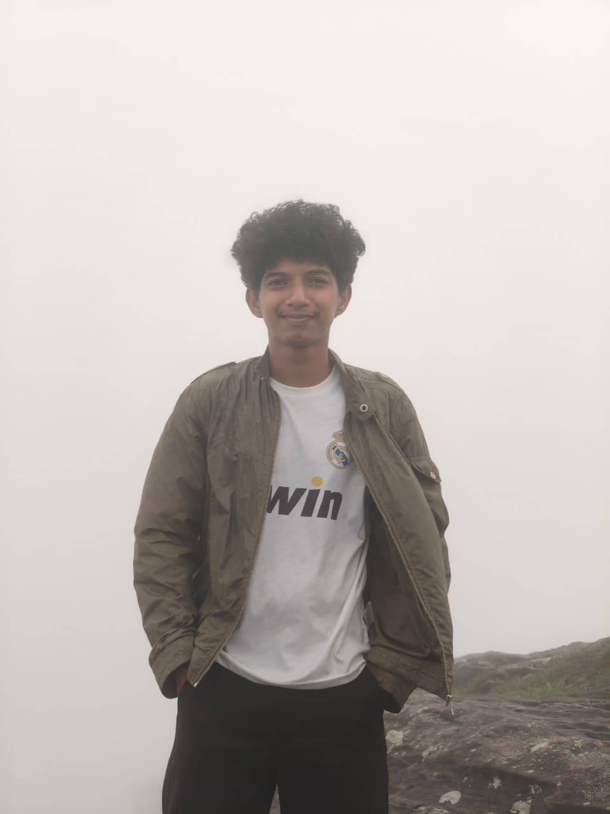
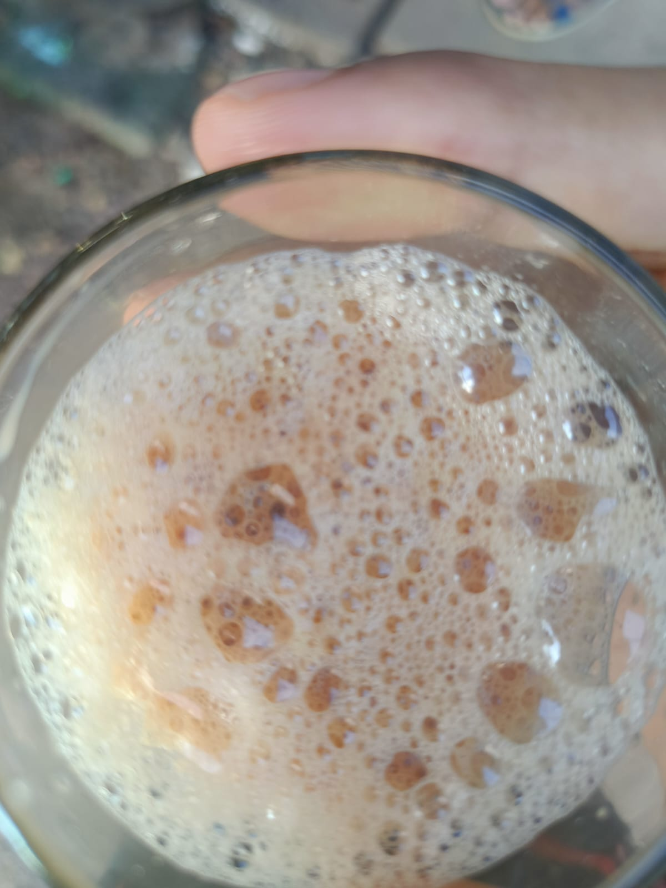
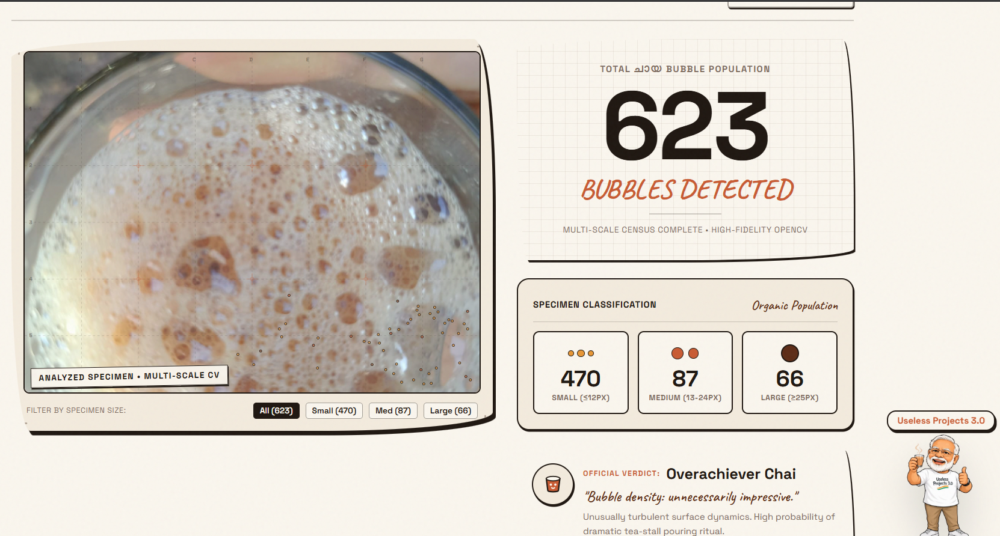
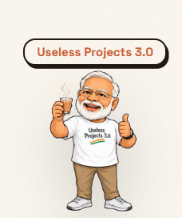
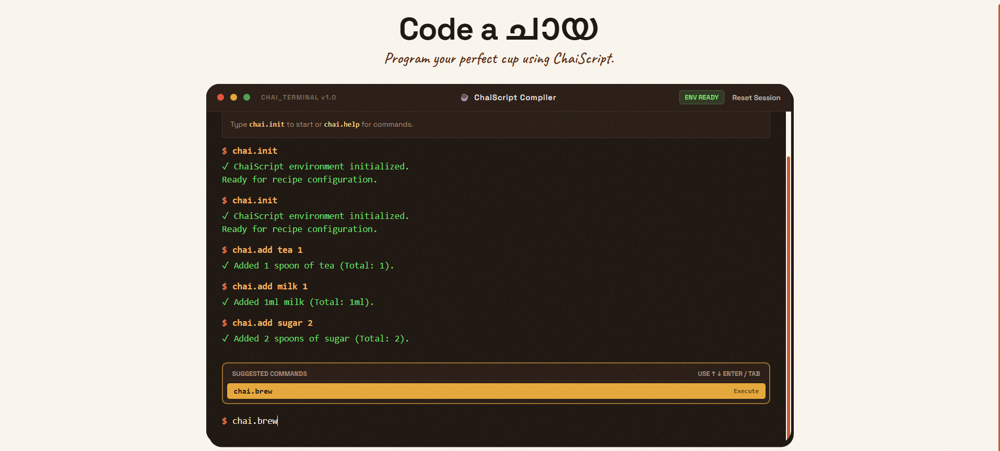
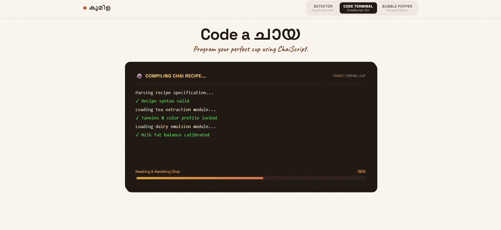
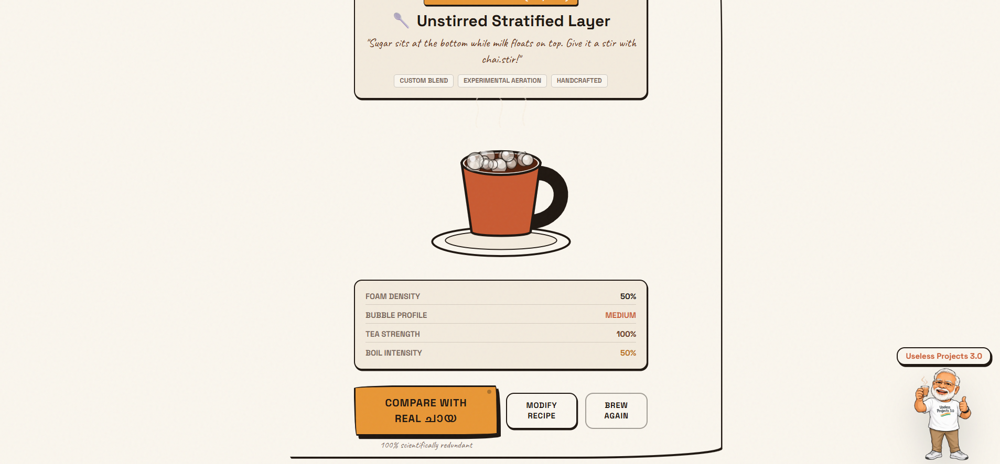

A ridiculously serious inquiry into roadside froth dynamics.
A hilarious, true survival story of two first-year MCA students who went from having
zero hackathon communities, getting ghosted by Internal SIH,
surviving a 1-hour midnight deadline panic, and ending up engineering an AI to
detect കുമിള (foam bubbles) in a glass of hot Kerala chaya.
✏️ "Written on a table that still smells of freshly strained cardamom tea..." — Zen & Midhun
Live Chaya Froth Station
Active Bubbles: 14 | Froth
Level: Kaduppam (High)
Tap the glass or button to froth up more bubbles!
⚠️ Sudden Epiphany • Wait A Second!
Wait... We Forgot to Introduce Ourselves! 🤦♂️
Before we drag you into the midnight panic, the existential dread of having zero code,
and our obsession with tea foam, we realized something criminal:
we completely forgot to introduce ourselves!
Allow us to introduce the two masterminds (and by masterminds, we mean two sleep-deprived MCA students
with caffeine in our blood and an unhinged dream) representing Team realFighters:
🥋 Chief Panic Officer
Zen Varghese
1st Year MCA • Co-Founder
"The guy who stared at the clock at 11:00 PM, mourned our SIH heartbreak, remembered the legendary
Appam bubble myth, and dragged Midhun into this glorious mess."

☕ Chief Chaya Officer
Midhun Mathew
1st Year MCA • Co-Founder
"The calm strategist who evaluated Idiyappam rings and mixture peanuts at 11:53 PM, took a slow sip
of tea, and dropped the immortal decree: 'Chaya bubble edukkam da!'"
☕ "Now that you know our faces and know exactly who to blame... here is how the madness began:"
📖 Journal Entry • The Complete Origin Story
How We Came into Useless Projects 3.0 ?
To understand how we ended up building software that counts foam bubbles in tea,
you have to understand our tragic, desolate origin. We are first-year MCA students.
Before this, during our undergraduate college years, we lived in a virtual technological
desert.
Our previous college didn't have any tech communities, zero TinkerHub chapters, zero dev clubs,
and nobody ever hosted a single hackathon. Not even a mini one.
🥋 Zen's Scratchpad Note:
"We literally watched people on LinkedIn winning hackathon swag hoodies and building revolutionary
startups, while our past college was debating whether to allow phones in the lab. We were STARVING for a
hackathon!"
So when we entered our first year of MCA, we made a solemn vow: we are going to compete in a hackathon
no matter what.
The golden ticket appeared almost immediately — the prestigious Internal Smart India Hackathon
(SIH).
We were hyped. We put our game faces on. We started hunting for teammates to conquer the nation.
And that is when disaster struck.
💔🪦
SIH Dreams: Destroyed Before Day 1
We went around looking for team members. What did we get? Absolute, deafening silence.
Nobody was interested. Nobody wanted to form a team. Nobody had any good ideas, and the people we asked
vanished faster than free samosas at an orientation. Because we couldn't assemble a team or lock in an idea,
we didn’t even get to participate in internal SIH.
We were crushed, rejected, and left standing empty-handed. But surrender is not in our blood.
Instead of sulking, I (Zen) turned to my friend Midhun with a wild
proposal:
"Bro... if the world doesn't want our useful ideas, let's join USELESS PROJECTS 3.0!"
"It all happened on the very last day of registration, late at night, exactly ONE HOUR before the deadline."
— The Midnight Panic of Zen & Midhun
With 60 minutes ticking on the clock, we had no team name, no project idea, and no plan.
Under peak deadline panic, we registered ourselves with the most aggressively ironic, cinematic name we
could conjure:
Team
realFighters.
We weren't fighting bugs or world hunger — we were fighting the countdown timer!
Now came the hardest challenge: What on earth do we build?
In sheer desperation, we opened ChatGPT and Claude. We begged the AI for
ridiculously useless ideas. But the AI models failed us completely — they kept generating boring, polite,
corporate "anti-productivity" apps that still smelled like homework. None of them had soul. None of them
made us laugh.
☕ Midhun's Voice Memo Note:
"ChatGPT told us to build a 'reverse alarm clock'. Bro, who wakes up in Kerala to a reverse alarm clock?!
We needed pure Malayali essence!"
That’s when a legendary memory flashed in my mind. I recalled a legendary project from a past hackathon:
The Appam Bubble Detector — an invention so absurd and so iconic that it became folklore.
Using the sacred Appam Bubble lore as our guiding star, our midnight brainstorm unlocked
The Holy Trinity of Kerala Snack Ideas:
TEA STALL NAPKIN BRAINSTORM
The 3 Contenders on the Napkin:
🍥
Idiyappam Ring Count
Computer vision system to calculate the exact count of concentric rice noodle loops in a single
Idiyappam.
Status: Scrapped (Infinite Loop Hazard)
🥜
Find Peanut in Mixture
Radar system to scan a bowl of spicy Kerala mixture and highlight the exact location of that one
delicious crunchy peanut.
Status: Scrapped (Too Useful!)
☕
Chaya Bubble Detector
An over-engineered detector to identify, count, and classify the froth bubbles (nuraya) on a glass of
fresh Kerala Meter-Chaya!
👑 THE CHOSEN CHAMPION
We had both options on the table. Zen looked at Midhun. Midhun stared at the screen with the clarity
of a monk at a tea stall at 6 AM, and gave the final, immortal verdict:
"Chaya bubble edukkam da!" ☕✨
— Midhun, locking in our destiny at 11:53 PM.
And so, we took the Chaya Bubble. Form submitted. Registration confirmed.
Team realFighters was officially registered for Useless Projects 3.0 with just 7 minutes to spare.
(At that frantic midnight hour, we didn't even have an official name for the project yet — the name
കുമിള was decided much later, after ending the project in the hackathon!).
Who needs Smart India Hackathon when you have the froth of Kerala tea running through your veins?
👥 Team Dossier • realFighters
Meet the Duo Behind the Madness
Zen Varghese
Chief Ideator • SIH Survivor
Status1st Year MCA
Past Hackathon Exp0.00%
Midhun Mathew
Decision Maker • Chaya Connoisseur
Status1st Year MCA
Uselessness Factor100% Unapologetic
🔬 Chapter 02 • The Bubble Detection Nightmare
The Great Bubble Crisis: AI Failures, Vibe Coding, & The Honest Hacker's Wipeout 💥
Everything was smooth sailing in our heads. We had registered for Useless Projects 3.0,
we had our glorious mission—Project കുമിള—and the roles in Team
realFighters
were crystal clear from minute one:
UI Mastermind & Future CEO — Frontend design, product vision, and the man
who will run the company someday.
"Bro, how hard could it be to count bubbles in a glass of tea?" we asked ourselves.
Famous last words.
The moment we actually looked at high-resolution photos of fresh Kerala meter-chaya, reality slapped us in
the face.
Tea froth isn't neat circles on a whiteboard. It’s an organic, chaotic storm of overlapping membranes,
microscopic foam, light reflections, caramel shadows, and translucent semi-invisible bubbles!
We literally had no clue how to detect them.
The AI Model Gauntlet (Or: How Deep Learning Gave Up on Kerala Tea)
I (Zen) rolled up my sleeves with FastAPI and OpenCV as the backend backbone, and unleashed
every cutting-edge AI and segmentation model I could get my hands on. Here is what happened:
YOLO Segmentation
Failed
Trained on objects, not foam. It hallucinated bounding boxes around cup reflections and ignored 90% of
actual froth. Completely useless on tea.
Result: Detected the glass rim, not a single bubble.
SAM / SAM 2 (Meta)
Failed
Either merged the entire foam layer into one giant blob, or fragmented each bubble into dozens of
micro-polygons. No useful middle ground.
Result: 1 bubble or 400 — never 74.
Moondream AI
Failed
A vision-language model. We prompted it to find bubbles — it wrote a short essay about hot beverages and
located exactly zero bubbles.
Result: Beautiful prose, zero CV output.
Cellpose
Partially Worked
Built for biological cell membranes — and the only model that found anything. Detected
visible bubbles reasonably well, but completely missed the translucent, invisible ones.
Result: Best option, still not good enough.
🔬 "Behold: The specimen scan results that made us question our life choices..."
← INSPECT ANOTHER ചായ

ABCDEF
12345
[ 0 ]
r: px conf: 0%
ANALYZED SPECIMEN • MULTI-SCALE CV
FILTER BY SIZE:
TOTAL ചായ BUBBLE POPULATION
74
BUBBLES DETECTED
SPECIMEN CLASSIFICATION
Organic Population
48
SMALL (≤12PX)
19
MEDIUM (13-24PX)
7
LARGE (≥25PX)
📸
Archival Note regarding this Specimen View:
The interactive interface above is reconstructed directly inside our new UI to showcase the flawed
detection results (it tagged only 74 bubbles, completely missing hundreds of real, fine foam bubbles
beneath the surface!). Our very original, messy early-experiment screenshots were lost to the digital
void during our late-night panic, so we memorialized the exact flawed data in this new interactive
view.
The Honest Hacker's Blunder: "Wait... You Mean We Didn't Have to Delete It?!"
While experimenting with these crazy detection techniques, the official kickoff time for
Useless Projects 3.0 was approaching.
🥋 Zen's Innocent Rulebook Logic:
"In every rulebook I had ever read on the internet, hackathons are supposed to be built 100% from scratch
AFTER the clock starts! I was genuinely terrified the organizers would inspect our GitHub commit logs, see
pre-existing files, and instantly banish us. So what did I do? Right before Useless 3.0 began... I
DELETED EVERYTHING. Clean slate. Zero code. Tabula rasa!"
I sat back, proud of my ironclad integrity. "Now we will code like true realFighters from minute
zero!"
And then the hackathon started. We logged into the channels and saw what the other participants were doing:
EVERY SINGLE TEAM HAD ALREADY BUILT HALF OR ALL OF THEIR PROJECTS!
People were showing off polished repos, pre-trained pipelines, and working prototypes!
Meanwhile, Team realFighters were sitting there with a freshly wiped directory and an empty hard drive.
Midhun to the Rescue... Or So We Thought! ☕📉
As sheer terror washed over me, Midhun leaned back with the calm swagger of a Fortune 500 CEO and smiled:
"Relax da Zen! Njan delete cheythilla (I didn't delete mine)! I did some code in JS, we are saved!"
— Midhun Mathew, delivering false hope at 12:40 AM
My heart leaped! We were saved! The future CEO had clutched the round!
I scrambled over to check his machine, expecting a miracle.
Instead, I stared into the abyss of Pure Vibe Coding™.
Midhun had decided to bring Computer Vision into the client-side browser using pure JavaScript and
OpenCV.js.
The catch? He had vibe-coded the entire thing without knowing what algorithms, matrix filters, or
thresholding mechanisms were actually happening under the hood!
> [WARN] Main UI thread blocked: Math.hypot() loop running 4,800,000 times
> [WARN] Browser fan sounding like an Air India Boeing 737 takeoff...
> [ERROR] cv.HoughCircles(): Target matrix isNaN or completely
hallucinating
> [CRITICAL] 0 BUBBLES FOUND. BROWSER TAB NOT RESPONDING.
> [ZEN INTERNAL MONOLOGUE] "WE ARE ABSOLUTELY DOOMED."
The browser tab choked, froze, and died. OpenCV.js was getting stuck in infinite loops,
the detection was failing catastrophically, and neither the browser nor Midhun knew what the math was doing.
At that exact moment, at 2:00 in the morning, with all my clean backend deleted and Midhun's vibe-coded JS
melted,
I thought: We are 100% doomed.
The Executive Decree: "Start From 1!" 🚀
You can't rattle a future CEO for long. Midhun closed the frozen browser tab, took a deep breath,
looked at our cold mugs of tea, and laid down the law:
"Enough of this browser vibe-coding nonsense. We start from 1. Real Python backend with FastAPI and OpenCV,
and a fresh, bulletproof React frontend. Let's build it right!"
— The Turning Point of Team realFighters
❌ The Disaster Architecture
• Pure JS / OpenCV.js running on browser thread
• Vibe-coded blind algorithms with zero OpenCV math understanding
• Browser freezing, memory leaks, 0 real bubbles detected
• Zen's backend pre-code wiped out by honest paranoia
✅ The Reborn RealFighters Architecture
• Backend: High-performance Python + FastAPI + OpenCV server
• Frontend: React.js modern UI with responsive specimen viewer
• Status: Starting from square 1 with pure grit and tea!
With that decision locked in, the real fight began. We wiped the sweat from our foreheads,
brewed another round of strong tea, and got to work building the true, immortal
Project കുമിള.
☕ Up Next: The Accidental Breakthrough (Thanks to the Hardware Bros)
💡 Chapter 03 • The Accidental Genius Move
The Hardware Bros Saved Our Project (And They Don't Even Know It) 🤝
In the middle of our existential crisis, something magical happened. We glanced to our right at the
hardware team sitting next to us — the ones building actual circuits and soldering actual components like
actual engineers. We figured, why not break the awkward silence and introduce ourselves?
🥋 Zen's Social Experiment:
"Us: 'Hey, we are doing chaya bubble detection from the foam of chaya.'
Hardware bro: 'Wait... THAT was our project for Useless Projects 2.0.'"
THE ROOM WENT SILENT. WE STARED. THEY STARED. TIME STOPPED.
What are the odds?! Our project — the idea we panic-registered at 11:53 PM — was apparently
a past-year Useless Projects 2.0 legendary project! The universe was telling us something. Unfortunately
for the hardware team, they never fully completed or presented it at the end. Their unfinished dream had
now become our very much alive (and barely functioning) reality.
"The torch has been passed. From hardware legends to software disasters. We carry this froth forward."
— Zen Varghese, being dramatic as usual
But the most important thing came next. We asked them — how did you approach bubble detection?
And they said two words that changed everything:
💡 THE EUREKA MOMENT
"Circle Detection."
— Hardware Team (casually handing us the solution over casual small talk)
That was it. That was the key. I (Zen) immediately pulled up ChatGPT, typed in
"circle detection for bubble counting OpenCV" and ChatGPT, for the first time in this
entire journey, actually delivered. It told us about contour detection + HoughCircles —
classic OpenCV algorithms perfectly suited for detecting circular bubble shapes in images.
We implemented it. We ran it. We held our breath. And then...
🎯 "IT WORKED. The bubbles were circled. The contours were drawn. Project കുമിള had RESULTS."
📸 ACTUAL DETECTION OUTPUT • MULTI-SCALE CV CONTOUR ANALYSIS

There she is. 74 bubble circles detected. Classified by size. Marked with orange rings.
Was it a perfect result? No. Were there hundreds more invisible micro-bubbles we completely missed?
Absolutely. But for a project born at midnight, running on zero prior experience and a ChatGPT tip from
a hardware bro, this was a certified miracle. 🎉
☕ Midhun's Scientific Assessment:
"74 bubbles detected out of what is probably 7400 actual bubbles. That's a 1% accuracy rate.
We are calling this a SUCCESS and nobody can stop us."
🎨 Chapter 04 • The Frontend Saga (A.K.A. Midhun's Magnum Opus)
Frontend UI: The Hardest Battle, Won by a Future CEO 🧑🎨
While I (Zen) was wrestling with OpenCV circles and contour detection in the backend, Midhun took on
what turned out to be the hardest part of the entire project: the frontend UI.
And Midhun being Midhun — he did not just slap together a basic HTML page. No. He went on a
research expedition. He dived deep into Canva, Stitch, Behance, Dribbble, and every design
inspiration website known to mankind. He studied aesthetic palettes, hand-drawn scrapbook vibes,
journal-style layouts, warm paper textures, and typographic hierarchies that would make a design school
professor weep with joy.
🥋 Zen's Eyewitness Account:
"I looked over at Midhun's screen and he had 47 browser tabs open. 47. He was building a moodboard
for a bubble detector. This man is either a genius or has completely lost his mind.
I choose to believe both."
The result of all this research? A stunning, warm-toned, handcrafted scrapbook interface that made our
useless bubble detector look like a premium scientific instrument. And somewhere in that beautiful chaos,
Midhun decided to include a very special guest:
🇮🇳 SPECIAL GUEST APPEARANCE

Modi Ji Enters the Chat
Yes. The Prime Minister of India made a cameo appearance in our chaya bubble
detector UI. Midhun, in a stroke of absolute unhinged genius, added a tiny Modi ji somewhere in the
interface — complete with a thumbs up — as the ultimate symbol of government-approved bubble science.
Was this planned? No. Was this necessary? Absolutely not.
Did it make the project 1000% better? Without question.
🏛️ "Official bubble detection, verified by the highest office in the land."
The UI research, the Canva inspiration boards, the Stitch explorations, the hand-picked Google Fonts, the
warm paper aesthetic, the scrapbook-journal feel — all of it came together into something that was
genuinely beautiful. Which created a new problem: our UI was now better than our actual project.
"We didn't build a bubble detector with a nice UI. We built a nice UI that happens to mention bubbles."
— The honest truth of Project കുമിള's frontend
⌨️ Chapter 05 • The ChaiScript Chronicles
Introducing ChaiScript: The Programming Language for Making Tea ☕💻
Here is where things went from useless to magnificently, absurdly useless. We were
already embarrassed by our project. Compared to the other teams — whose projects were
funny, creative, impressive — ours felt like a negative funny useless project.
The bubble detector wasn't getting laughs. We needed more.
🥋 Zen's Moment of Madness:
"What if... we invented a programming language. For making tea. Where the commands are literally
chai.init, chai.add milk 1, chai.brew...
and the compiler makes you a virtual cup of chaya?"
The idea: ChaiScript — a fake programming language where you code a cup of tea
step-by-step using terminal commands, and the system compiles your recipe into a virtual brew with a
bubble profile analysis. Absolutely useless. Absolutely perfect.
The execution: Midhun, through Antigravity vibe coding, built the entire ChaiScript
terminal compiler in the frontend. In what can only be described as "coding by vibes and prayer," the
terminal came to life:
01
THE TERMINAL IS BORN
Behold — CHAI_TERMINAL v1.0, powered by the ChaiScript Compiler.
Type chai.init to begin your culinary programming journey.
Add tea, milk, sugar. Type chai.brew. Watch science happen.
This is simultaneously the most pointless and most satisfying thing we built.

Verdict: It runs. It compiles. It outputs tea instructions.
Zero actual beverages produced. 100% satisfaction guaranteed.
But wait — what happens after you submit the recipe? You can't just have a terminal that does nothing.
The ChaiScript compiler needed to actually compile your chai. And so, the compilation screen
was born:
At this point during the presentation, at least three audience members genuinely leaned forward
to see if the tea was actually going to be ready. It was not. The progress bar is a lie.
It will always be a lie. That is the art.

Verdict: The most realistic fake compiler in Kerala.
"Tannins & color profile locked" is a sentence that has never been spoken in software engineering.
Until now.
And finally — after all the compilation, all the chai.init commands, all the tannin calibrations — you
get your result. The moment of truth. The masterpiece:
03
COMPILATION COMPLETE — YOUR CHAI IS READY
The ChaiScript compiler presents your final brew: a rendered cup of tea with specs.
Foam Density: 50%. Bubble Profile: MEDIUM. Tea Strength: 100%. Boil Intensity: 50%.
It even says at the bottom, in small italic text:
"100% scientifically redundant."
Which honestly describes the entire project. And we are incredibly proud of that.

Final verdict from our own UI: "100% scientifically redundant."
We couldn't have said it better ourselves. Also — there is a button that says
"COMPARE WITH REAL ചായ". We did not implement that button. It does nothing.
Perfect. 10/10.
🎤 Chapter 06 • The Grand Flopping (Our Finest Hour)
The Presentation: A Disaster in Three Acts 🎭
The day of reckoning arrived. Useless Projects 3.0 presentation time.
We had submitted the project. The code was running (mostly). The UI looked beautiful.
Modi ji was in position. Everything was technically ready.
What followed was a presentation masterclass in how things can go beautifully, spectacularly wrong.
ACT IThe Trembling Hands of Bubble Detection
When it came time to demonstrate the actual bubble detection — the core feature, the whole point, the
technical marvel — Zen's hands started shaking. The mouse cursor wobbled across the screen.
The upload button seemed to move further away the closer you got to it. The demo loaded.
The bubbles appeared. And for one beautiful second, it worked.
Then the demo froze. The audience waited. Zen smiled awkwardly.
The freezing was not planned. The smile was.
ACT IIMidhun's Presentation Also Flopped
Midhun, our calm future CEO, stepped up to present the frontend UI research, the ChaiScript
terminal, the beautiful design choices. And then Midhun — the man who had spoken the immortal words
"Chaya bubble edukkam da" with the confidence of an emperor — forgot what he was going to say.
The words just... evaporated. He stared at the screen. The screen stared back.
The audience stared at both of them. Silence, in three different flavors.
ACT IIIModi Ji Went Completely Unnoticed
The most painful part. Modi ji — our secret weapon, our crowd-pleaser, our guaranteed laugh —
was sitting there in the corner of the UI, giving his iconic thumbs up, waiting for his moment
of recognition.
Nobody noticed. Not a single person in the audience pointed at Modi ji.
Not even the judges. The Prime Minister's cameo in our bubble detector was invisible to all of humanity.
Modi ji was robbed. We are still not over this.
After the presentation ended, we walked away from the stage with the specific kind of silence that only
two people who just flopped together can share. No words were needed. We had built something,
submitted it, presented it, and watched it land with the grace of a wet chapati on a marble floor.
"At least we presented. At least we were here. At least the bubbles were detected. Mostly."
— Team realFighters, picking themselves up off the floor
🎉 Chapter 07 • The Sweet(s) Redemption
We Got Stickers & Uzhunnu Vada. We Are Happy. 🥲🍩
In the aftermath of the spectacular flop, as we sat in existential contemplation of our bubble-counting
legacy, something wonderful happened. Something that made all the midnight panic, the deleted code,
the frozen demos, the invisible Modi ji, the trembling hands — all of it — completely worth it.
🎟️
OFFICIAL REWARDS
🏷️
STICKERS
Official Useless Projects 3.0 stickers. Will be placed on laptops immediately.
This is the real currency of the hackathon ecosystem.
🍩
UZHUNNU VADA
The crispy, golden, perfectly fried Kerala comfort food. Hot. Fresh. Given to us.
At that moment, all the pain dissolved faster than sugar in boiling chai.
And that is the thing about Team realFighters. We didn't win. We didn't impress anyone.
Modi ji wasn't noticed. The demo froze. The hands trembled. The presentation flopped.
But we showed up, built something from nothing, submitted it before the deadline,
and stood on that stage.
First-year MCA students. Zero prior hackathon experience. Registered at midnight.
Built in chaos. Presented with trembling hands. And at the end, we got stickers and vada.
"Stickers + Uzhunnu Vada = Worth it. We would do this again. (Please don't make us do this again.)"
— Team realFighters, happy with snacks
📜 FIN • The Credits Nobody Asked For
Thanks For Wasting Your Time 🙏
"If you actually read this entire thing — congratulations. You have successfully wasted a significant
portion of your finite human existence reading about two MCA students counting tea bubbles.
We are genuinely touched. And also a little concerned about your life choices."
😭 Chief Panic Officer
Zen Varghese
"I deleted all the code before the hackathon started. I counted 74 bubbles in a cup of tea.
This is my legacy."
VS
😤 Future CEO (Still)
Midhun Mathew
"I vibe-coded an OpenCV algorithm I did not understand. Then I made the Prime Minister a cameo.
Nobody noticed. I am fine. I think."
☕
No chaya bubbles were harmed in the making of this project.
Several were detected. Most were missed. All were loved.
Project കുമിള • Team realFighters • Useless Projects 3.0 Proudly the most scientifically redundant project in the history of Kerala foam dynamics.
P.S. — If you are the hardware team who told us about circle detection: you are heroes.
Unsung, unnoticed heroes. Like Modi ji in our UI. 🫡